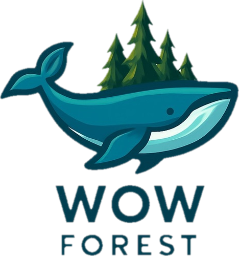
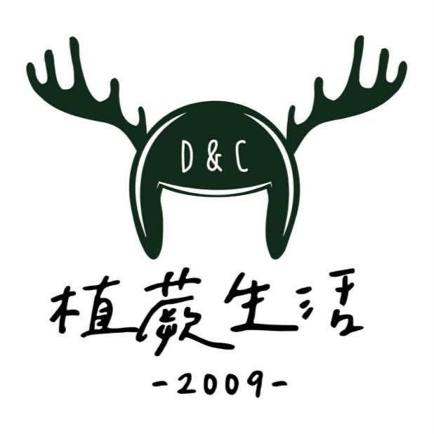

板材真的會影響鹿角蕨的生長嗎？該從栽培需求出發，還是也考慮作品的美感？


鹿角蕨的栽培方式有很多種，而上板無疑是最具代表性的方式之一。
從最早常見的木板，到現在市面上琳瑯滿目的塑膠板、樹皮板、植床板、金屬板，甚至各種模仿附生植物生長型態的特殊盆器，板材的選擇似乎越來越多元。
但板材真的會影響鹿角蕨的生長嗎？不同材質之間又有什麼差異？我們究竟應該從栽培需求出發，還是也該考慮作品本身的美感？
這次，沃森與植蕨生活 Duke，從各自的栽培經驗出發，聊聊鹿角蕨上板這件事。
剛開始接觸鹿角蕨的時候，我最早使用的就是木板。後來才慢慢發現，原來板材有這麼多選擇，從杉木板、香檳樹皮板、塑膠板、植床板、鋼板、蛇籠板，到模仿附生植物生長型態的方盆，以及泰國開發的網狀盆，各有不同的設計。
我還記得自己是新手的時候，曾經很直覺地把板子當成另一種形式的盆器來理解，但後來發現這個思考模式其實不太恰當。
盆器本身就是一個容器，可以直接承載介質與植物；板子卻不一樣，我們還需要透過綁線等方式，將介質與板子結合，才能完成整個栽培配置。
這讓我開始思考：板子本身究竟會對植物產生什麼影響？
使用木板時，經常可以看到鹿角蕨的根系緊緊抓住板子，有時候脫板甚至會連木板表面的一層木皮一起撕下來。那麼，使用塑膠板會不會對植物不好？金屬板會不會導熱？陶板是不是比較有利於水分控制？木板是不是需要鑽洞才能增加通風？
這些都是我在新手階段曾經有過的疑問。
不過，經過一段時間的栽培，我現在反而覺得，板材對植物生長的直接影響，可能沒有我們想像中那麼大。
至少在一般栽培條件下，我更傾向把板材看成承載植物與介質的媒介。真正影響植物生長與水分管理的，還是介質本身。
上板之後，植物與水苔貼合的那一面，會形成相對保水的環境；如果板材本身有大量孔洞，通風與乾燥速度也可能增加，進而改變整體的保水能力。
但這些影響，最後還是要回到介質的特性與配置來理解。關於上板介質與水分管理的關係，可以參考我們上一篇的討論。
我自己在板材的選擇上，通常都是以好用、上手為主。
不管是塑膠板、木板、樹皮板，或是金屬板，我都會使用。只是長久來說，塑膠板還是比較耐用。
如果是單純裝飾或收藏展示，我就會考慮使用木板、樹皮板等特殊板材。
對我目前的養植方式來說，板材不是單純的一個耗材，而是作品的延伸。所以我會根據使用方式，或是植物最後要展示的位置，做不同的選擇。
木板是我個人偏好使用的前三名板材類別。
首先是價格便宜，而且可以依照需求進行適度加工。再來是木板與鹿角蕨搭配起來，在視覺上非常協調，能呈現出自然附生的感覺。
木板還有一個我認為很有趣的特性，就是它本身可以參與部分水分調節。
木材具有孔隙，可以吸收並保留一定程度的水分，因此我會把木板想像成一塊巨大的樹皮。它有一定的保水能力，但又不至於像某些吸水材料那樣大量吸水。
當然，這仍然無法改變前面提到的觀點：介質才是水分管理的主要角色。
木板最大的缺點就是會腐壞。通常使用一至兩年後，就可能因為腐朽而必須更換。
雖然木材可以自然分解，但如果仔細觀察整個使用週期，木板反覆更換所產生的廢棄物，未必比一片可以重複使用多次的塑膠板少。
另外，有些人會使用碳化木板，認為碳化可以增加木板的耐用度。不過，這部分我目前沒有很明確的認同，從自己的使用經驗來看，也沒有明顯感受到耐用度提升。對我而言，購買碳化木板的主要理由反而是外觀比較好看。
至於木板背面要不要鑽洞，我認為對通風或乾燥速度的影響相當有限，鑽洞與否都可以。倒是鑽洞在澆水時，可能會帶來一些操作上的便利。
木板、樹皮板其實是新手比較喜歡的選擇，因為可以自己 DIY。
不管是碳化，還是使用綁鋁線的方式，都能自己動手製作，對一般玩家來說，會有一種完成作品的成就感。
樹皮板其實是我最喜歡，但使用最少的一種板材。
原因很簡單，就是空間利用率。
樹皮板可以很自然地模擬鹿角蕨附生在樹木上的樣子，而且天然樹皮具有各種不同的形狀與紋理，讓每一片上板作品都能呈現不同的風貌。
但對溫室管理來說，樹皮板往往需要占用比較多的空間。當栽培數量增加時，這就成為我必須考量的問題。
另外，樹皮板在加工過程中有時會產生一些零碎的邊角料。我自己會把這些破碎的樹皮重新組合，拼成一片比較大的板子，盡量減少材料浪費。
這些拼接後的樹皮板，也很適合用來種植蘭花或空氣鳳梨。
塑膠板是我目前使用頻率最高的板材。
原因很實際：便宜、耐用，而且可以重複使用。
當植株長大，需要重新脫板換板時，塑膠板通常還能再次利用，不容易產生廢棄物。即使長時間日曬，或是浸泡在水中，也不太影響它的使用壽命。
現在有些塑膠板的設計也非常方便，綁繩孔、掛勾位置，甚至花牌卡槽都已經預先規劃好，可以減少很多上板時的操作時間。
如果今天有一百株鹿角蕨需要上板，我絕對會優先選擇塑膠板。
對於需要大量栽培與管理的人來說，這些操作上的便利性，其實遠比板材本身的材質特性重要。
塑膠板目前已經是比較成熟的周邊產品，耐用而且容易上手。
如果考慮長期使用，我也會認為塑膠板是比較實際的選擇。
至於金屬板，我比較偏向收藏使用。它的美感設計很好，但是實用性相對低。
除了這些常見的板材，我自己也使用過植床板製成的板材。
這種板子背後幾乎是鏤空的，因為植友高炳煌曾經推廣過，所以也有人稱它為「高大板」。
我認為這類板材種植皇冠鹿角蕨與亞猴，算是相當好用。
但除此之外，其他品種在我目前的栽培環境中，經常會因為乾燥速度太快而停止生長。
另一個讓我比較困擾的地方是側芽處理。這類板材在側芽拆除時不太容易操作，拆下來的側芽也比較容易被撕破。
鋼籃在我看來，也可以歸類在類似的思考方向，兩者都屬於通風能力非常強的栽培媒介。
另外，還有一種我很常使用的設計，就是附生方盆。
嚴格來說，附生方盆並不完全算是板材，它更像是介於板子與盆器之間的設計。
我常在育苗、準備將植株放大個體時使用。操作上很簡單，將植株與水苔放入盆內，再用伸縮膜固定，就能完成基本的栽培配置。
它的優點是操作方便，而且稍微調整盆器角度，就可以讓鹿角蕨呈現接近垂直的生長型態。
不過，它的水分管理相對比較困難。由於水苔被包覆在盆器內部，水分比較容易殘留，如果使用在對水分比較敏感的品種上，就需要特別留意介質的配置與澆水頻率。
我覺得板材使用上，還是要考慮環境以及澆水頻率。
如果濕度太高，我會比較建議使用塑膠板；一般室內養護的話，就可以使用木板或金屬板。
板材對我來說，並不是什麼用途就一定要搭配什麼材質，而是依照實際需求去選擇。
我覺得這其實就是板材選擇最有趣的地方。
如果從大量栽培的角度出發，我會優先考慮成本、耐用度、空間利用，以及後續管理的便利性。
但如果是個人收藏，或是想把一株鹿角蕨呈現成一件作品，那麼板材的美感、造型與植物之間的搭配，就會變得更加重要。
同一株植物，放在塑膠板上可能是最有效率的栽培配置；放在一塊天然樹皮上，卻可能成為一件很有特色的作品。
這兩種選擇並沒有誰比較好，只是我們想要的結果不同。
回頭看自己剛接觸鹿角蕨時，曾經花很多時間思考哪種板材比較好、什麼材質會不會影響植物，現在反而覺得，板材不需要被賦予太多神奇的功能。
它可以是承載介質的媒介，可以是提高栽培效率的工具，也可以是植物作品的一部分。
真正重要的，還是我們清不清楚自己的栽培目的，以及如何讓板材、介質與環境形成適合的配置。
你目前最常使用哪一種板材？是因為栽培需求，還是因為喜歡它呈現出的樣子？
你的觀察，也許正是別人理解這個問題時，缺少的那一塊拼圖。
植蕨生活 Duke × 沃森阿蒙
我們從不同的角度看待板材。一個在意栽培效率與管理，一個在意使用體驗與作品美感。但無論是為了讓植物長得更好，還是讓植物呈現出更好的樣貌，板材終究是我們與鹿角蕨之間的一種連結。
下一次選擇板材時，不妨先想想：你是想讓它成為一株好好生長的植物，還是一件值得欣賞的作品？或許兩者都可以。
「植人對談」由沃森刊載，延續植播電台對植物、技術與種植思考的探索。